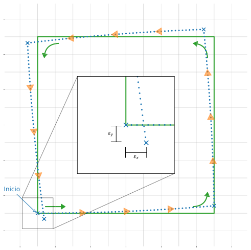

Robótica
Clase 16
Semana 21 - 17/09/2025
Navegación
Área más desafiante en robótica móvil
4 pilares
- Percepción
- Localización
- Cognición
- Control
Localización
Responder a la pregunta: ¿Dónde está el robot ahora?
Si se pudiera conectar un GPS preciso a un robot móvil todo el tiempo se solucionaría gran parte del problema
Realidad
- Precisión inaceptable para robots móviles a escala humana
- No funciona en interiores ni áreas obstruidas (ej, calles rodeadas por edificios altos)
- Posición respecto al planeta Tierra

Localización
Más problemas
Un robot que interactúa con humanos
- Su posición relativa con respecto al objetivo es igualmente importante que su posición absoluta
- Identificación de obstáculos dinámicos y estáticos: construir un mapa e identificar la posición en relación al mismo
2 tipos de posicionamiento
- Absolutos
- Relativos

Métodos absolutos
Basados en referencias y sensores exteroceptivos
Ejemplos:
- Brújulas magnéticas
- Balizas (beacons) de navegación
- Sistema de posicionamiento global (GPS)
- Puntos de referencias (activos o pasivos)
- Otros..
Métodos relativos
Por lo general basado en sensores propioceptivos
- Se determina la ubicación actual “avanzando” desde una posición previa, con la información de velocidad en un cierto período de tiempo, hacia una dirección conocida
\[ \require{color} \textcolor{#1f77b4}{\boldsymbol{p}_k} = \textcolor{#d62728}{\boldsymbol{p}_{k-1}} \textcolor{#ff7f0e}{+} \textcolor{#7f7f7f}{{\boldsymbol{\stackrel{\cdot}{p}}_k}} \cdot \textcolor{#9467bd}{\vec{\boldsymbol{\theta}}} \cdot \textcolor{#2ca02c}{\Delta t} \]
También conocidos como dead-reckoning
Ejemplos:
- Navegación inercial
- Odometría
Odometría
- El método más utilizado y económico
- Buena precisión a corto plazo y alta frecuencia de muestreo
- Implementación más común a través de encoders ópticos acoplados a los ejes de las ruedas
- Para calcular la distancia incremental de ambas ruedas en el intervalo \(i\):
\[ \Delta s_{L|R,i} = \pi \cdot D_{L|R} \cdot \frac{N_{L|R, i}}{c_e} \]
donde:
- \(D_{L|R}\): Diámetro de la rueda (en [mm])
- \(N_{L|R, i}\): incremento de pulsos del encoder en el intervalo
- \(c_e\): Resolución del encoder (en [pulsos por revolución])
Repaso odometría
Calculo del desplazamiento desde una posición inicial mediante la medición de las revoluciones de las ruedas
Sea la posición en el instante \(k-1\): \[ p_{k-1} = \begin{bmatrix} x & y & \theta \end{bmatrix}^\top \]
La posición estimada para el instante \(k\) puede obtenerse sumando las distancias recorridas de forma incremental:
\[ p_{k} = p_{k-1} + \Delta p \]
Repaso odometría
- Para un robot differential-drive, con un período de muestreo fijo \(\Delta t\):
\[ \Delta p = \begin{bmatrix} \Delta x \\ \Delta y \\ \Delta\theta \end{bmatrix} = \begin{bmatrix} \Delta s \cos(\theta + \frac{\Delta\theta}{2})\\ \Delta s \sin(\theta + \frac{\Delta\theta}{2})\\ \frac{\Delta s_{R} - \Delta s_{L}}{b} \end{bmatrix} \]
donde:
- \(\Delta x, \Delta y, \Delta\theta\): el avance en el último período
- \(\Delta s_{L|R}\): la distancia recorrida por la rueda izquierda y derecha respectivamente
- \(\Delta s = (\Delta s_{L} + \Delta s_{R}) / 2\)
- \(b\): la distancia entre ruedas
Repaso odometría
- Utilizando las definiciones de \(\Delta s\) y \(\Delta\theta\) se obtiene la ecuación para la actualización de la posición
\[\begin{align*}p_k &= p_{k-1} + \Delta p\\ &= \left[\begin{matrix}x\\y\\\theta\end{matrix}\right] + \left[\begin{matrix}\left(\frac{\Delta s_{L}}{2} + \frac{\Delta s_{R}}{2}\right) \cos{\left(\theta + \frac{- \Delta s_{L} + \Delta s_{R}}{2 b} \right)}\\\left(\frac{\Delta s_{L}}{2} + \frac{\Delta s_{R}}{2}\right) \sin{\left(\theta + \frac{- \Delta s_{L} + \Delta s_{R}}{2 b} \right)}\\\frac{- \Delta s_{L} + \Delta s_{R}}{b}\end{matrix}\right]\end{align*}\]
\[ \def\f{{\boldsymbol{f}}} \]
- De forma reducida:
\[ p_{k} = \f \left( x, \ y, \ \theta, \ \Delta s_{L}, \ \Delta s_{R}, \ b\right) \]
Modelo de error de odometría
- Para el movimiento incremental \(\Delta s_L\) y \(\Delta s_R\) se asume una matriz de covarianza \(\Sigma_\Delta\):
\[ \Sigma_\Delta = \mathcal{covar}(\Delta s_L, \Delta s_R) = \begin{bmatrix} k_L |\Delta s_L| & 0\\ 0 & k_R |\Delta s_R| \end{bmatrix} \]
- Los errores de las ruedas motrices son independientes
- La varianza de los errores es proporcional al valor absoluto de la distancia recorrida
- \(k_L\) y \(k_R\) son coeficientes de error constantes
Modelo de error de odometría
- Suponiendo que \(p_{k-1}\) y \(\Delta_{L,R} = \begin{bmatrix} \Delta s_L & \Delta s_R \end{bmatrix}\) no están correlacionados y \(\boldsymbol{f}\) se puede aproximar mediante la expansión de Taylor de primer orden:
\[ \Sigma_{p_k} = \nabla_p \f \cdot \Sigma_{p_{k-1}} \cdot \nabla_p \f^\top + \nabla_{\Delta_{L,R}} \f \cdot \Sigma_\Delta \cdot \nabla_{\Delta_{L,R}} \f^\top \]
donde \(\Sigma_{p_{k-1}}\) está dado por el paso anterior, y puede calcularse a partir de un valor incial (generalmente \(\Sigma_{p_0} = \mathbb{0}\))
- Utilizando la definción de \(p_{k} = \f(\cdot)\) es posible obtener los Jacobianos:
\[ F_p = \nabla_p \f \\ F_{\Delta_{L,R}} = \nabla_{\Delta_{L,R}} \f \]
Modelo de error de odometría
- El Jacobiano de \(\f\) con respecto al vector de posición \(p = \begin{bmatrix}x & y & \theta \end{bmatrix}\):
\[ F_p = \nabla_p \f = \nabla_p (\f^\top) = \begin{bmatrix} \frac{\partial \f}{\partial x} & \frac{\partial \f}{\partial y} & \frac{\partial \f}{\partial \theta} \end{bmatrix} \]
- Que resulta en:
\[F_p = \left[\begin{matrix}1 & 0 & - \Delta s \sin{\left(\frac{\Delta\theta}{2} + \theta \right)}\\0 & 1 & \Delta s \cos{\left(\frac{\Delta\theta}{2} + \theta \right)}\\0 & 0 & 1\end{matrix}\right]\]
Modelo de error de odometría
- El Jacobiano de \(\f\) con respecto al desplazamiento de las ruedas \(\Delta_{L,R} = \begin{bmatrix} \Delta s_L & \Delta s_R \end{bmatrix}\):
\[ F_{\Delta_{L,R}} = \nabla_{\Delta_{L,R}} \f = \begin{bmatrix} \frac{\partial \f}{\partial \Delta s_L} & \frac{\partial \f}{\partial \Delta s_R} \end{bmatrix} \]
- Que resulta en:
\[F_{\Delta_{L,R}} = \left[\begin{matrix}\frac{\Delta s \sin{\left(\frac{\Delta\theta}{2} + \theta \right)}}{2 b} + \frac{\cos{\left(\frac{\Delta\theta}{2} + \theta \right)}}{2} & - \frac{\Delta s \sin{\left(\frac{\Delta\theta}{2} + \theta \right)}}{2 b} + \frac{\cos{\left(\frac{\Delta\theta}{2} + \theta \right)}}{2}\\- \frac{\Delta s \cos{\left(\frac{\Delta\theta}{2} + \theta \right)}}{2 b} + \frac{\sin{\left(\frac{\Delta\theta}{2} + \theta \right)}}{2} & \frac{\Delta s \cos{\left(\frac{\Delta\theta}{2} + \theta \right)}}{2 b} + \frac{\sin{\left(\frac{\Delta\theta}{2} + \theta \right)}}{2}\\- \frac{1}{b} & \frac{1}{b}\end{matrix}\right]\]
Modelo de error de odometría
- Dados los parámetros de error \(k_L\) y \(k_R\), se puede ver la evolución del error de posición
Fuentes de error
La verdadera fuente de error generalmente se produce por un modelo incompleto del entorno
Errores sistemáticos
Errores aleatorios (o no sistemáticos)
Errores no sistemáticos
Causados por la interacción del robot con características impredecibles del entorno (aleatorios)
- Desplazamiento sobre superficies irregulares u objetos inesperados
- Deslizamientos:
- Suelo con baja adherencia
- Giro rápido (derrape)
- Fuerzas externas (interacción con cuerpos externos)
- Fuerzas internas (ruedas libres, patines, etc)
- Contacto no puntual de las ruedas y el suelo
Errores sistemáticos
Suelen deberse a imperfecciones en la construcción de un robot móvil (deterministas)
- Ruedas no alineadas o diámetro desiguales
- El promedio de los diámetros difiere del nominal
- Variación en el punto de contacto de la rueda
- Resolución y frecuencia de muestro de encoder limitada
- Por el propio modelo de odometría
Errores sistemáticos
No suelen cambiar durante la operación
- Puede mejorarse la odometría midiendo las fuentes de error más predominantes y contrarrestando su efecto mediante software
2 fuentes de error más comunes:
- Diámetro desiguales de las ruedas \[D_L \neq D_R\]
- Incerteza en la distancia entre las ruedas \[b?\]
Incerteza en la distancia entre ruedas
- Las ruedas de goma no entran en contacto con el suelo en un punto, sino en una zona de contacto
Denominamos este error Tipo A asociado al coeficiente \(E_b\):
\[ E_b = \frac{b_{\textrm{actual}}}{b_{\textrm{nominal}}} \]
donde \(b\) es la distancia entre ruedas
Diámetro desiguales
- No se fabrican 2 ruedas exactamente iguales
- Ruedas de goma se comprimen
Denominamos este error Tipo B asociado al coeficiente \(E_d\):
\[ E_d = \frac{D_R}{D_L} \]
donde \(D_{L|R}\) es el diámetro de las ruedas izquierda y derecha respectivamente
\(E_d\) y \(E_b\) son valores adimensionales, expresados como fracciones del valor nominal
\(E_b\) solo afecta al girar y \(E_d\) solo afecta al movimiento en línea recta
Errores de escala
Si el promedio de los dos diámetros reales \(D_a\) difiere del diámetro nominal \(D_n\) el vehículo experimentará un error odométrico adicional, denominado error de escala \(E_s\)
También conocidos como errores de alcance
\(E_s\) afecta el movimiento en línea recta y el movimiento de giro puro
Para largos períodos de tiempo, los errores de Tipo A y Tipo B superan los errores de escala
\(E_s\) es fácil de medir y corregir con una regla o cinta métrica
Trayectoria cuadrada unidireccional
Se compone de 4 segmentos en línea rcta y 4 rotaciones puras en las esquinas
- El robot parte de la posición \((x_0, y_0)\), y angulo \(\theta_0\)
- La posición final muestra el error de odometría
Trayectoria cuadrada unidireccional
- Al comparar la pose del vehículo medida con la calculada por la odometría se obtiene un conjunto de errores \(\epsilon_x\), \(\epsilon_y\) y \(\epsilon_\theta\)
\[ \begin{gather*} \epsilon_x = x_{\textrm{abs}} - x_{\textrm{calc}} \\ \epsilon_y = y_{\textrm{abs}} - y_{\textrm{calc}}\\ \epsilon_\theta = \theta_{\textrm{abs}} - \theta_{\textrm{calc}} \label{eq:errors} \end{gather*} \tag{1}\]
donde:
- \(\{x,y,\theta\}_{\textrm{abs}}\): Posición y orientación absoluta del robot
- \(\{x,y,\theta\}_{\textrm{calc}}\): Posición y orientación del robot calculada por la odometría

Trayectoria cuadrada unidireccional
- El error \(\textcolor{#9467bd}{E_d}\) por diámetros desiguales se muestra en la trayectoria ligeramente curvada (línea punteada)
- El error \(\textcolor{#d62728}{E_b}\) por incertidumbre sobre la distancia entre ejes provoca un giro deficiente (línea discontinua)
Cualquiera de estos dos errores podría haber producido el mismo error de posición
Simple compensación de error
- Se aumenta el valor de \(b\) para que el robot “gire más” en cada esquina, a lo que parece ser el valor “ideal”
Simple compensación de error
- Se aumenta el valor de \(b\) para que el robot “gire más” en cada esquina, a lo que parece ser el valor “ideal”
- El robot “calibrado” tendrá enormes errores de odometría, a pesar de que la trayectoria en un sentido muestre que está bien calibrado
Trayectoria cuadrada bidireccional
- Realizar la misma trayectoria, pero en ambos sentidos de giro: horario (CW) y anti-horario (CCW)
- Se obtienen conjuntos de errores \(\epsilon_x\), \(\epsilon_y\) y \(\epsilon_\theta\) para cada sentido
- Se puede observar:
- Los errores se agrupan en dos áreas distintas
- La distribución dentro de los grupos es el resultado de errores no sistemáticos
Trayectoria cuadrada bidireccional
- Coordenadas de los centroides
\[ \def\ccw#1{{\underset{\scriptsize \textrm{CCW}}{#1}}} \def\cw#1{{\underset{\scriptsize \textrm{CW}}{#1}}} \def\ccwcw#1{{\underset{\scriptsize \textrm{CCW|CW}}{#1}}} \]
\[ \ccwcw{\bar{x}} = \frac{1}{N} \sum_{i = 1}^N \ccwcw{\epsilon_{x_i}} \label{eq:x_centroid} \tag{2}\]
\[ \ccwcw{\bar{y}} = \frac{1}{N} \sum_{i = 1}^N \ccwcw{\epsilon_{y_i}} \label{eq:y_centroid} \tag{3}\] con \(N = 3,5,7 \cdots\) la cantidad de repeticiones para cada lado
Trayectoria cuadrada bidireccional
- Offset de los centroides con respecto al origen
\[ \ccw{\bar{r}} = \sqrt{\ccw{\bar{x}}^2 + \ccw{\bar{y}}^2} \label{eq:r_ccw_centroid} \]
\[ \cw{\bar{r}} = \sqrt{\cw{\bar{x}}^2 + \cw{\bar{y}}^2} \label{eq:r_cw_centroid} \]
- El mayor valor como la medida para errores sistemáticos:
\[ E_{\textrm{max,sist.}} = \max{\left( \ccw{\bar{r}}, \cw{\bar{r}} \right)} \]
Análisis de los errores sistemáticos
Se analizarán los errores por separado y posteriormente se superpondrán para representar condiciones reales
Utilizaremos aproximaciones de ángulos pequeños (medidos en radianes):
\[ L\sin{\gamma} \approx L \gamma \qquad L \cos{\gamma} \approx L\]
- Para simplicidad la posición inicial del robot \((x_0, y_0) = (0,0)\)
Errores de tipo A
- La figura muestra la contribución de los errores de Tipo A (asociados a \(E_b\))
- Causan un giro excesivo (o insuficiente) en las esquinas
- La diferencia de rotación en cada giro de 90° se denota como \(\alpha\) (en \(\textrm{[rad]}\)).
Errores de tipo A
Segmento 1: \[ \begin{align*} x_1 &= x_0 + L\\ y_1 &= y_0 \end{align*} \]
Segmento 2: \[ \begin{align*} x_2 &= x_1 + L \sin{\alpha} \approx (L) + L\alpha\\ y_2 &= y_1 + L \cos{\alpha} \approx L \end{align*} \]
Segmento 3: \[ \begin{align*} x_3 &= x_2 - L \cos{2 \alpha} \approx (L + L\alpha) - L \approx L\alpha\\ y_3 &= y_2 + L \sin{2 \alpha} \approx (L) + 2 L \alpha \end{align*} \]
Segmento 4: \[ \begin{align*} x_4 &= x_3 - L \sin{3 \alpha} \approx (L\alpha) - 3 L \alpha \approx \boxed{-2 L \alpha}\\ y_4 &= y_3 - L \cos{3 \alpha} \approx (L + 2 L \alpha) - L \approx \boxed{2 L \alpha} \end{align*} \]
En sentido anti-horario:
Errores de tipo A
Segmento 1: \[ \begin{align*} x_1 &= x_0 + L\\ y_1 &= y_0 \end{align*} \]
Segmento 2: \[ \begin{align*} x_2 &= x_1 + L \sin{\alpha} \approx (L) + L\alpha\\ y_2 &= y_1 - L \cos{\alpha} \approx -L \end{align*} \]
Segmento 3: \[ \begin{align*} x_3 &= x_2 - L \cos{2 \alpha} \approx (L + L\alpha) - L \approx L\alpha\\ y_3 &= y_2 - L \sin{2 \alpha} \approx (-L) - 2 L \alpha \approx -L -2 L \alpha \end{align*} \]
Segmento 4: \[ \begin{align*} x_4 &= x_3 - L \sin{3 \alpha} \approx (L\alpha) - 3 L \alpha \approx \boxed{-2 L \alpha}\\ y_4 &= y_3 + L \cos{3 \alpha} \approx (-L - 2 L \alpha) + L \approx \boxed{-2 L \alpha} \end{align*} \]
En sentido horario:
Errores tipo B
- La figura muestra la contribución de los errores de Tipo B (asociados a \(E_d\))
- Causan una trayectoria ligeramente curva durante los tramos rectos
- El robot adquiere un error de orientación incremental \(\beta\) (en \(\textrm{[rad]}\)).
- La línea auxiliar \(c^\prime_1\) (que conecta los vértices de la trayectoria real) tiene una pendiente de \(\beta/2\)
Errores tipo B
Segmento 1: \[ \begin{align*} x_1 &= x_0 + L \cos{\beta/2} \approx L\\ y_1 &= y_0 + L \sin{\beta/2} \approx L \beta / 2 \end{align*} \]
Segmento 2: \[ \begin{align*} x_2 &= x_1 - L \sin{3 \beta/2} \approx L - L \beta/2\\ y_2 &= y_1 + L \cos{3 \beta/2} \approx L \beta/2 + L \end{align*} \]
Segmento 3: \[ \begin{align*} x_3 &= x_2 - L \cos{5 \beta/2} \approx -3 L \beta/2 \\ y_3 &= y_2 - L \sin{5 \beta/2} \approx -2 L \beta/2 + L \end{align*} \]
Segmento 4: \[ \begin{align*} x_4 &= x_3 + L \sin{7 \beta/2} \approx \boxed{2 L \beta}\\ y_4 &= y_3 - L \cos{7 \beta/2} \approx \boxed{-2 L \beta} \end{align*} \]
En sentido anti-horario:
Errores tipo B
Segmento 1: \[ \begin{align*} x_1 &= x_0 + L \cos{\beta/2} \approx L\\ y_1 &= y_0 + L \sin{\beta/2} \approx L \beta / 2 \end{align*} \]
Segmento 2: \[ \begin{align*} x_2 &= x_1 + L \sin{3 \beta/2} \approx L + 3 L \beta/2\\ y_2 &= y_1 - L \cos{3 \beta/2} \approx L \beta/2 - L \end{align*} \]
Segmento 3: \[ \begin{align*} x_3 &= x_2 - L \cos{5 \beta/2} \approx 3 L \beta/2 \\ y_3 &= y_2 - L \sin{5 \beta/2} \approx -L (\beta/2 + 1) \end{align*} \]
Segmento 4: \[ \begin{align*} x_4 &= x_3 - L \sin{7 \beta/2} \approx \boxed{-2 L \beta}\\ y_4 &= y_3 + L \cos{7 \beta/2} \approx \boxed{-2 L \beta} \end{align*} \]
En sentido horario:
Corrección de errores de Tipo A
- Error de Tipo A y Tipo B para la dirección \(x\) en trayectoria con sentido horario y anti-horario:
\[ \begin{alignat}{2} &\textrm{A)} \, \cw{x} &= -2 L \alpha \qquad &&\textrm{B)} \, \cw{x} &= -2 L \beta \\ &\textrm{A)} \, \ccw{x} &= -2 L \alpha \qquad &&\textrm{B)} \, \ccw{x} &= 2 L \beta \end{alignat} \]
- Superponiendo ambos tipos de error y sumando ambas expresiones:
\[ \left. \begin{alignat}{3} &\cw{\textrm{x:}} \, -&2 L \alpha - &2 L \beta &&= \cw{\bar{x}} \\ &\ccw{\textrm{x:}} \, -&2 L \alpha + &2 L \beta &&= \ccw{\bar{x}} \end{alignat} \right\} -4 L \alpha = \cw{\bar{x}} + \ccw{\bar{x}} \to \alpha = \frac{\cw{\bar{x}} + \ccw{\bar{x}}}{-4L} \tag{4}\]
Corrección de errores de Tipo A
- El mismo análisis para la dirección \(y\) muestra un resultado similar:
\[ \begin{alignat}{3} &\textrm{A)} \, &\cw{y} &= -2 L \alpha \qquad &&\textrm{B)} \, \cw{y} &= -2 L \beta \\ &\textrm{A)} \, &\ccw{y} &= 2 L \alpha \qquad &&\textrm{B)} \, \ccw{y} &= - 2 L \beta \end{alignat} \]
- Superponiendo ambos tipos de error y restando ambas expresiones:
\[ \left. \begin{alignat}{4} &\cw{\textrm{y:}} \, -&2 L \alpha - &2 L \beta &&= \cw{\bar{y}} \\ &\ccw{\textrm{y:}} \, &2 L \alpha - &2 L \beta &&= \ccw{\bar{y}} \end{alignat} \right\} -4 L \alpha = \cw{\bar{y}} - \ccw{\bar{y}} \to \alpha = \frac{\cw{\bar{y}} - \ccw{\bar{y}}}{-4L} \tag{5}\]
Corrección de errores de Tipo A
- Dado que la distancia entre ejes \(b\) es inversamente proporcional a la rotación real
\[ \frac{b_{\textrm{actual}}}{\pi / 2} = \frac{b_{\textrm{nominal}}}{\pi / 2 - \alpha} \to b_{\textrm{actual}} = \frac{\pi / 2}{\pi / 2 - \alpha} b_{\textrm{nominal}} \tag{6}\]
y por lo tanto:
\[ E_b = \frac{\pi / 2}{\pi / 2 - \alpha} \tag{7}\]
Corrección de errores Tipo B
- Análisis similar al anterior para la dirección en \(x\)
\[ \begin{alignat}{2} &\textrm{A)} \, &\cw{x} = -2 L \alpha \qquad &&\textrm{B)} \, &\cw{x} &= -2 L \beta \\ &\textrm{A)} \, &\ccw{x} = -2 L \alpha \qquad &&\textrm{B)} \, &\ccw{x} &= 2 L \beta \end{alignat} \]
- Superponiendo ambos tipos de error y restando ambas expresiones:
\[ \left. \begin{alignat}{3} &\cw{\textrm{x:}} \, -&2 L \alpha - &2 L \beta &&= \cw{\bar{x}} \\ &\ccw{\textrm{x:}} \, -&2 L \alpha + &2 L \beta &&= \ccw{\bar{x}} \end{alignat} \right\} -4 L \beta = \cw{\bar{x}} - \ccw{\bar{x}} \to \beta = \frac{\cw{\bar{x}} - \ccw{\bar{x}}}{-4L} \tag{8}\]
Corrección de errores Tipo B
- El mismo procedimiento para la dirección en \(y\) arroja un resultado similar
\[ \begin{alignat}{3} &\textrm{A)} \, &\cw{y} &= -2 L \alpha \qquad &&\textrm{B)} \, \cw{y} &= -2 L \beta \\ &\textrm{A)} \, &\ccw{y} &= 2 L \alpha \qquad &&\textrm{B)} \, \ccw{y} &= - 2 L \beta \end{alignat} \]
- Superponiendo ambos tipos de error y sumando ambas expresiones:
\[ \left. \begin{alignat}{4} &\cw{\textrm{y:}} \, -&2 L \alpha - &2 L \beta &&= \cw{\bar{y}} \\ &\ccw{\textrm{y:}} \, &2 L \alpha - &2 L \beta &&= \ccw{\bar{y}} \end{alignat} \right\} -4 L \beta = \cw{\bar{y}} + \ccw{\bar{y}} \to \beta = \frac{\cw{\bar{y}} + \ccw{\bar{y}}}{-4L} \tag{9}\]
Corrección de errores Tipo B
El radio de curvatura \(R\) de las trayectorias en linea recta se puede encontrar a partir del triángulo \(\overset{\triangle}{ABM}\) en la figura \[ R = \frac{L/2}{\sin(\beta/2)} \tag{10}\]
Para determinar la relación entre los diámetros de las ruedas:
\[ E_d = \frac{D_R}{D_L} = \frac{R + b/2}{R - b/2} \label{eq:wheel_correction} \tag{11}\]
Esta relación se puede utilizar para corregir errores de Tipo B
Corrección de ambos tipo de error
- La corrección del error de distancia entre ejes \(E_b\) es trivial
La distancia entre ejes \(b\) se redefine según la ecuación: \[ b_{\textrm{actual}} = \frac{\pi / 2}{\pi / 2 - \alpha} b_{\textrm{nominal}} \]
- La corrección para los diámetros de rueda desiguales \(E_d\) es más compleja
Al aplicar un factor de compensación, debemos asegurarnos de no modificar el diámetro medio de la rueda \(D_a = (D_R + D_L)/2\)
Corrección de ambos tipo de error
- Resolviendo
\[ \left. \begin{aligned} D_a = (D_R + D_L)/2 \\ E_d = \frac{D_R}{D_L} \end{aligned} \right\} E_d D_L + \frac{D_R}{E_d} = 2 D_a \]
- Se obtiene
\[ \begin{align*} E_d D_L + D_L = 2 D_a &\to D_L = \frac{2}{E_d +1} D_a \\ D_R + \frac{D_R}{E_d} = 2 D_a &\to D_R = \frac{2}{\frac{1}{E_d} +1} D_a \end{align*} \]
Corrección de ambos tipo de error
- Se definen dos factores de corrección:
\[ \begin{align*} c_L &= \frac{2}{E_d + 1} \\ c_R &= \frac{2}{\frac{1}{E_d} + 1} \end{align*} \tag{12}\]
- Se re-escribe la ecuación de desplazamiento lineal de las ruedas:
\[ \Delta s_{L|R,i} = \pi \cdot D_{L|R} \cdot \frac{N_{L|R, i}}{c_e} \cdot c_{L|R} \]
Resumen del procedimiento
- Medir la posición absoluta del vehículo.
- Realizar la trayectoria cuadrada de 4x4 [m] en sentido horario, asegurándose de:
- detenerse después de cada tramo recto de 4[m]
- realizar un total de cuatro giros de 90° en la esquina
- conducir el robot lentamente para evitar deslizamientos
- Al regresar a la zona de inicio, medir la posición absoluta del vehículo.
- Compare la posición absoluta con la posición calculada del robot utilizando las ecuaciones en 1.
- Repita los pasos 1 a 4 cuatro veces más
- Repita los pasos 1 a 5 en sentido antihorario
- Utilice las ecuaciones 2, 3 para obtener \(\ccwcw{\bar{x}}\) y \(\ccwcw{\bar{y}}\)
Resumen del procedimiento
Con \(\alpha\) (ec. 4 o 5), obtener el nuevo valor de \(b\) (6): \[ b_{\textrm{actual}} = \frac{\pi / 2}{\pi / 2 - \alpha} b_{\textrm{nominal}} \]
Con \(\beta\) (ec. 8 o 9), \(R\) (10) y \(E_d\) (11), obtener los coeficientes de corrección \(c_L\) y \(c_R\) (12): \[ \begin{align*} c_L &= \frac{2}{E_d + 1} \\ c_R &= \frac{2}{\frac{1}{E_d} + 1} \end{align*} \]
Referencias
Laboratorio
Calibración de odometría
Robótica - TUAR - FICH - UNL